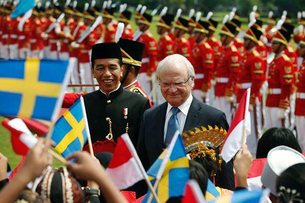
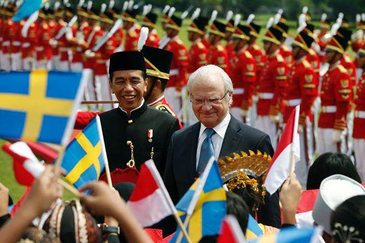

Kerjasama multilateral adalah kolaborasi antara tiga negara atau lebih yang berlangsung dalam platform internasional untuk mencapai tujuan bersama, seperti perdamaian, pembangunan, atau pemecahan masalah global. Berbeda dengan kerjasama bilateral yang melibatkan dua negara, kerja sama multilateral berfokus pada upaya kolektif yang melibatkan banyak pihak dari berbagai belahan dunia. Bentuk kerja sama ini seringkali dijembatani oleh organisasi internasional, seperti Perserikatan Bangsa-Bangsa (PBB), Organisasi Kesehatan Dunia (WHO), atau Bank Dunia, yang menyediakan forum bagi negara-negara anggota untuk merumuskan kebijakan dan tindakan bersama. Dalam konteks SDGs (Sustainable Development Goals), kerja sama multilateral sangat penting untuk mengatasi isu-isu global seperti perubahan iklim, ketidaksetaraan gender, dan kemiskinan, karena masalah tersebut tidak mengenal batas negara dan memerlukan pendekatan yang terkoordinasi secara luas.
Jika Indonesia ingin berkolaborasi secara multilateral untuk mencapai SDGs terkait kesetaraan gender, Swedia merupakan mitra yang sangat relevan. Negara ini dikenal dengan komitmennya yang tinggi terhadap kesetaraan gender, yang tercermin dalam berbagai kebijakan progresif di bidang pendidikan, ekonomi, dan politik. Swedia telah menempati posisi terdepan dalam berbagai indeks kesetaraan gender global, termasuk Global Gender Gap Index yang dikeluarkan oleh World Economic Forum. Kolaborasi dengan Swedia dapat memberikan Indonesia akses kepada pengalaman dan kebijakan yang telah berhasil diterapkan, yang dapat disesuaikan dengan konteks Indonesia.
Kerja sama multilateral antara Indonesia, Swedia, dan negara-negara lain dapat mencakup berbagai inisiatif. Salah satunya adalah pengembangan kebijakan gender global yang dapat dijadikan acuan bagi negara-negara di dunia. Selain itu, program pelatihan dan pendidikan untuk pemberdayaan perempuan, serta peningkatan akses mereka terhadap ekonomi dan pendidikan, dapat menjadi fokus utama. Indonesia dan Swedia juga dapat bersama-sama mengembangkan proyek-proyek pemberdayaan ekonomi yang memberikan perempuan akses lebih besar terhadap modal dan peluang kerja. Inisiatif-inisiatif ini tidak hanya akan menguntungkan Indonesia, tetapi juga memberikan manfaat besar bagi negara-negara lain yang terlibat dalam kerja sama ini.
Bagi Indonesia, kerja sama dengan Swedia dapat mempercepat implementasi kebijakan berbasis kesetaraan gender yang lebih inklusif dan berkelanjutan. Pengalaman Swedia dalam merumuskan dan melaksanakan kebijakan yang mendukung perempuan dapat menjadi model bagi Indonesia untuk mempercepat kemajuan dalam bidang ini. Sementara itu, Swedia dapat memperluas pengaruhnya dalam kawasan Asia dan memperkuat peranannya dalam mendukung negara-negara berkembang dalam mencapai kesetaraan gender. Kerja sama ini juga akan memberikan kesempatan bagi negara-negara lain untuk belajar dari praktik terbaik yang diterapkan oleh Indonesia dan Swedia, serta memperkuat komitmen global terhadap kesetaraan gender.
 
